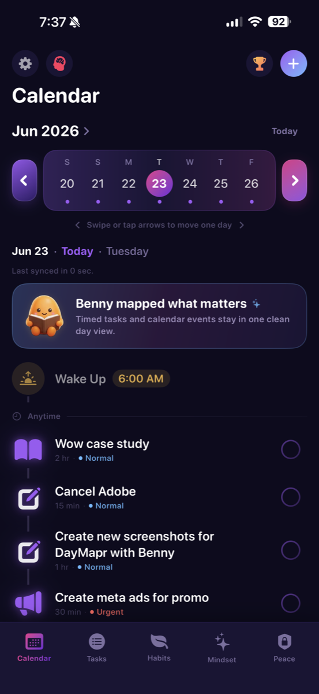
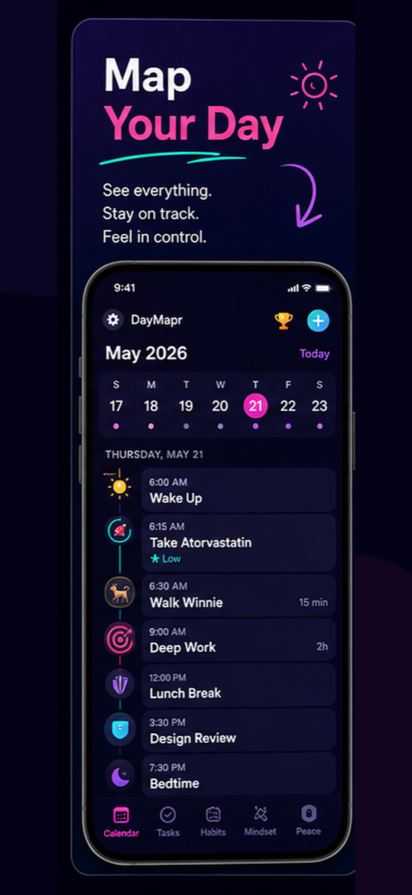

Map the day
Timed tasks, calendar events, reminders, and routines live in one daily view.
ADHD planner app
Daymapr turns scattered tasks, habits, reminders, and focus blocks into one calm daily map, so the next step is easier to see.


Timed tasks, calendar events, reminders, and routines live in one daily view.
Capture the messy thoughts first, then turn them into clear actions.
When the day goes sideways, Daymapr helps you restart with the next useful step.

Daily planning for ADHD
Daymapr is built for the real daily loop: wake up, remember what matters, pick the next task, keep habits moving, and protect focus time.
Daymapr
A clear ADHD planner for tasks, habits, focus, reminders, and real life.